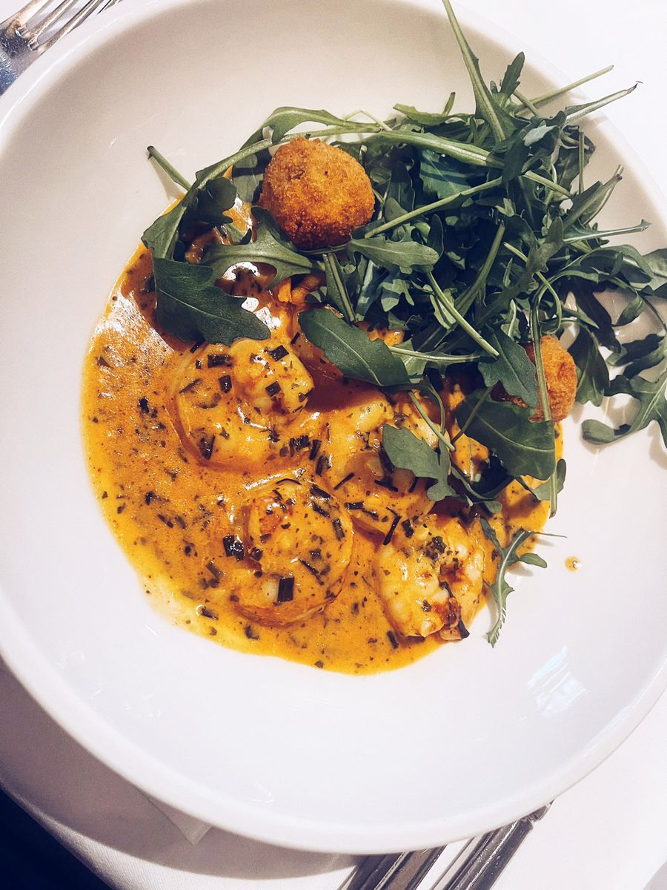
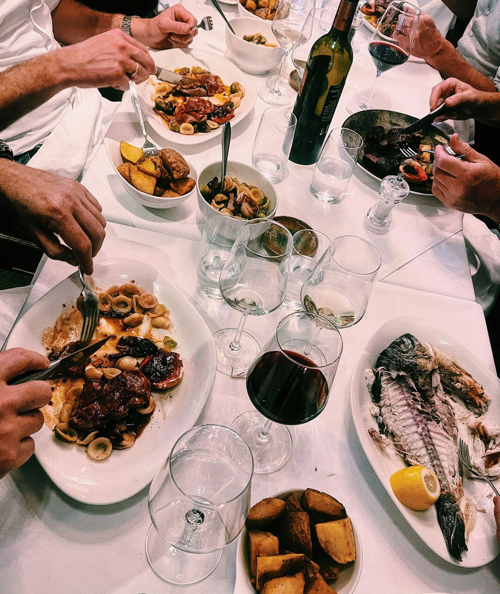
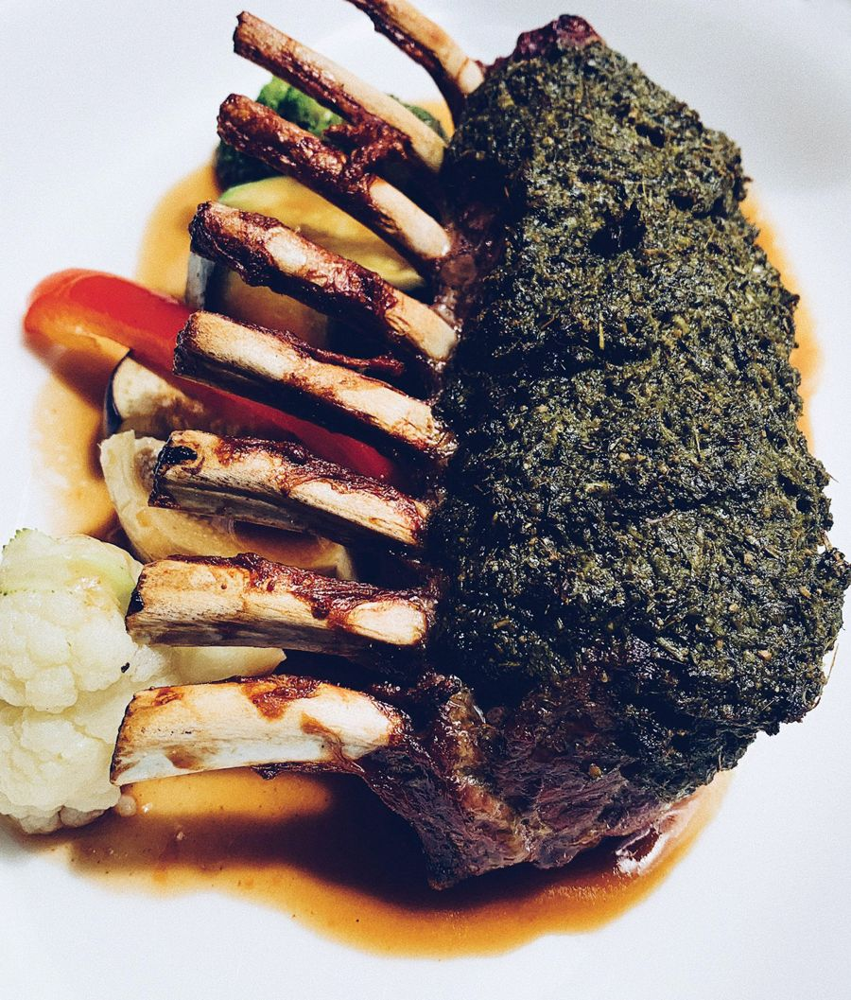
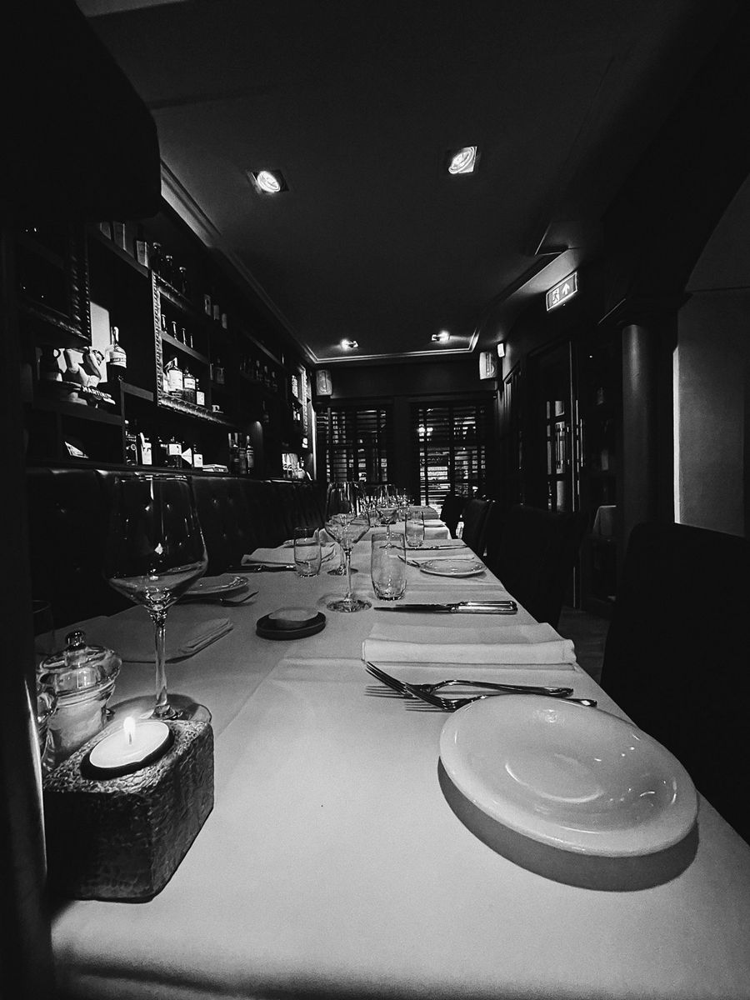
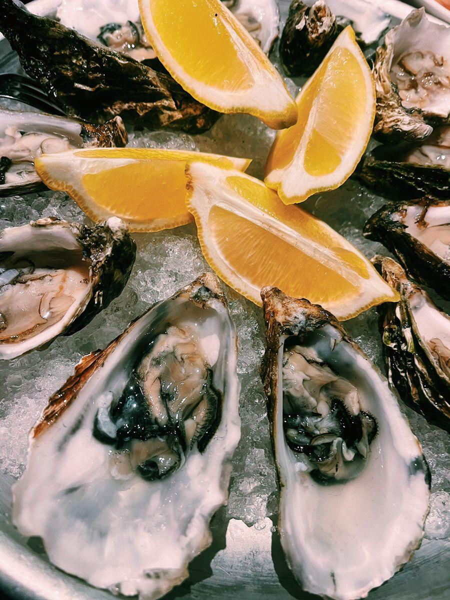
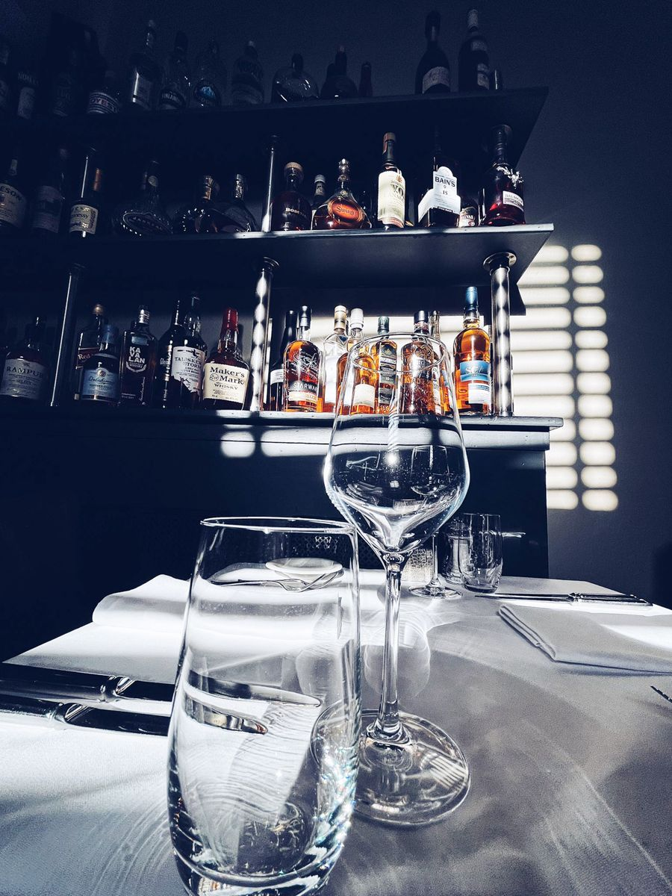
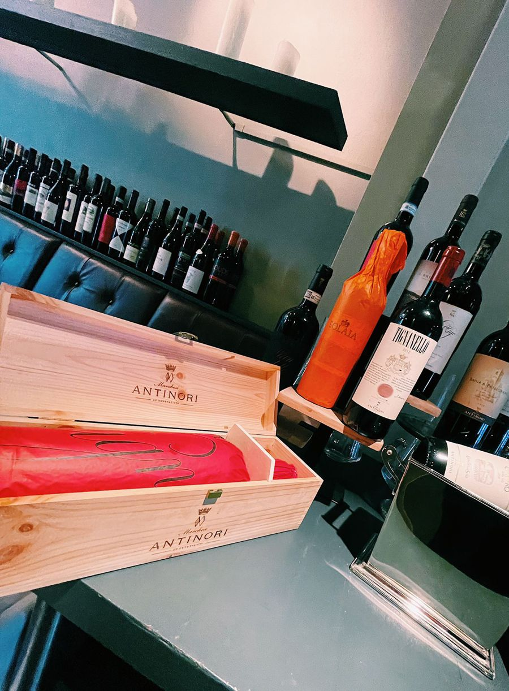
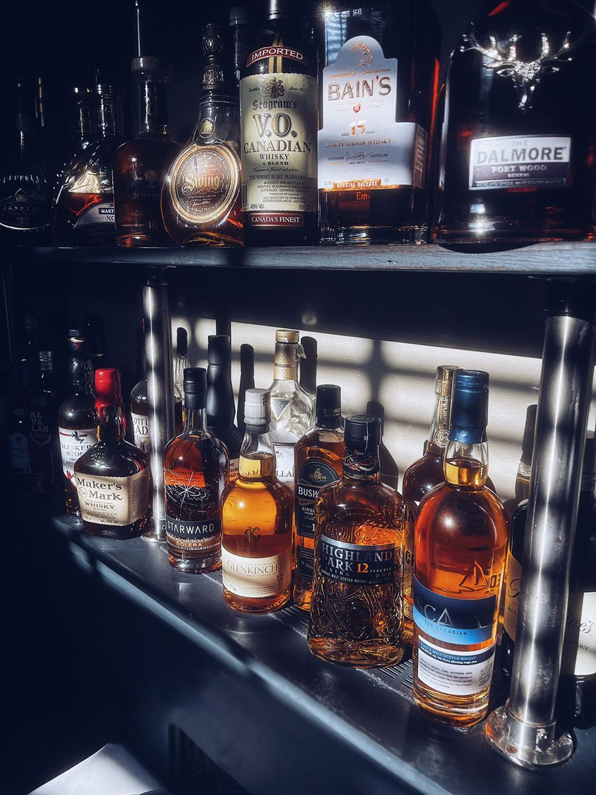
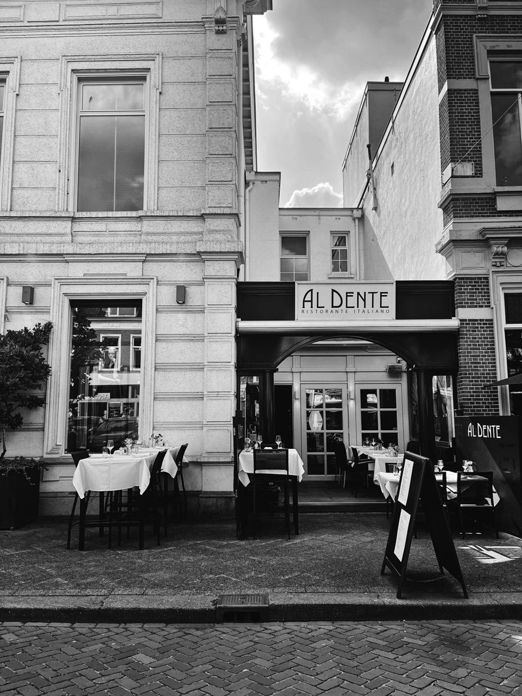

Pasta e Basta
Vitello tonnato of carpaccio vooraf, daarna pasta of risotto, en als afsluiter tiramisù of sgroppino.
€ 44,95 p.p.Bekijk menu

Antipasti, pasta, risotto en mooie vis- en vleesgerechten, aan de Nieuwe Ginnekenstraat. Van dinsdag tot en met zaterdag vanaf 12:00 uur.
Italiaanse klassiekers, van carpaccio en risotto tot tarbot, lamscarré en tiramisù.
Bijgerechten: spaghetti all'aglio, insalata verde, verdure grigliate en patate fritte, vanaf € 4,95. Ook koffie, thee en digestivi als limoncello en grappa.







Al Dente is het Italiaanse restaurant van Corné en Esther, aan de Nieuwe Ginnekenstraat in Breda. Op de kaart staan de klassiekers uit de Italiaanse keuken: vitello tonnato, risotto, saltimbocca alla Romana en natuurlijk tiramisù.
Bij ons draait het om de kwaliteit en de beleving aan de hele tafel. Daarom kiest u bij grotere gezelschappen samen uit ons Menu Classico.
Reserveer online in een paar klikken. Lukt dat niet, of heeft u een vraag? App of bel ons gerust.
Kies online uw datum, tijd en aantal personen.
Di – za 12:00 – 23:00 uur
Zondag en maandag gesloten
Nieuwe Ginnekenstraat 20
4811 NR Breda
Betaald parkeren voor de deur. Parkeergarage op korte loopafstand.
Vanaf 6 personen kiest u uit ons Menu Classico.